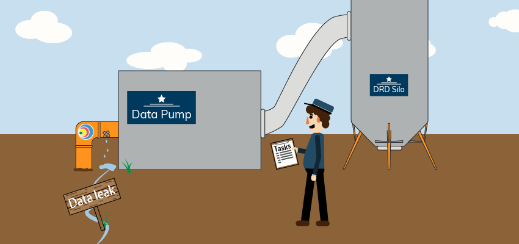
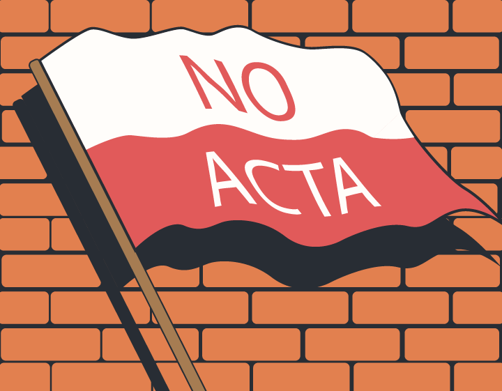
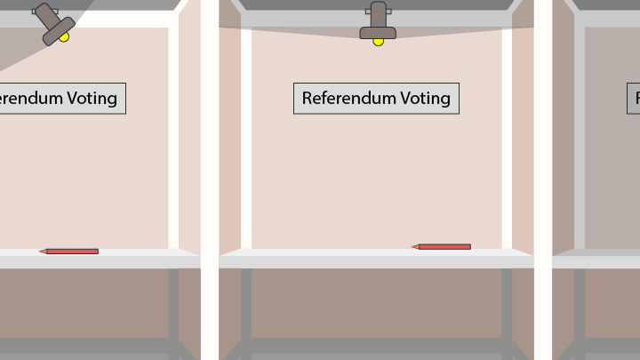

In the second part of this series, we take a look at technology legislation after 9/11 and the American response. All but one of the laws discussed were drafted before the full scope of US surveillance became known. Even so, the public began to speak up. Starting in the European Union, public action soon spread to the rest of the world. Before we knew it, there were massive worldwide protests.
Part I of this series looked at early technology legislation up to 2001. Up until the PATRIOT Act, which signalled the start of the mass surveillance arms race. We discussed the legacy of technology legislation and saw overreaching states and obvious corporate influences. It showed the distorted reality of technology legislation.
At some point people were fed up with their public representatives. Major legislation since the PATRIOT Act has seen large protests, both online and in physical form. Let’s dive into the legislation that caused it.
[EU] 2006 - Data Retention Directive
The Data Retention Directive (DRD) passed in 2006. It aimed to harmonise and update European rules on data retention for telecommunication services. Under the DRD, EU member states had to store citizens’ telecommunications data for 6 months to 2 years. Storing this data allowed law enforcement and intelligence agencies to use it in the investigation, detection and prosecution of ‘serious crimes’ and terrorism.
Telecommunication providers had to store all the metedata. This is who you called, who you emailed, what websites you visited and the location of your mobile phone. In short, metadata is almost everything except the content of the communication itself. This data could then be accessed without any special warrants. And to top it off, it wasn't limited to investigating certain specific crimes, only ‘serious crime’.
The DRD suffered from vague wording, a lack of safeguards and no proof of the effectiveness of mass surveillance. It set off alarms in many of the EU member states. Privacy organisations rallied citizens and started campaigning against the local adoption of this directive Even though legislation is drafted in the European Union, member states still have to pass country-specific interpretations that take national requirements into account. . The German court concluded that the DRD was incompatible with the German constitution. The Romanian constitutional court found that it went against the European Convention of Human Rights. This led to a fierce discussion leading up to 2010, when the directive was evaluated by the European Commission.
During the evaluation, Directive Commissioner Malmström announced that "data retention is here to stay." This came as a surprise, as Malmström was a long-time critic of mass surveillance. All arguments against the directive were brushed aside. They even used the indefensible statement that there was ‘no evidence' that data retention has led to serious abuse in any concrete cases.
There is evidence to the contrary. Polish law enforcement investigated journalists critical on the government to reveal their sources. And Dutch law enforcement investigated unrelated persons because they share the same first name as someone on trial.
As the cherry topping the cake, Commissioner Malmström stated that member states were dragging their feet with local adoption of the DRD. They would be required to implement the law, even if it went against their constitution. If they had an issue with that, they would have to take it up with the European Court of Justice.

That is exactly what happened. It was December 2013 when the Irish High Court and the Austrian Constitutional Court asked the European Court of Justice (ECJ) to evaluate the DRD. In 2014, the ECJ ruled that it did indeed clash with Human Rights. It failed to uphold articles 7 (no retroactive criminalisation of acts) and 8 (respect for private and family life). The data collection under this directive was disproportional and thus invalid.
Lawmakers intended the DRD to fight criminal activity, but failed to define its terms of use and safeguards. After many years of activism, the protesters were proven right. The ECJ and national court rulings now stand as important jurisprudence for the future. This story ends well, but for the 8 years it was active it was a breach of our rights.
[US] 2011 - Stop Online Piracy Act (SOPA/PIPA)
The US proposed two pieces of legislation to protect intellectual property and stop piracy in 2011: SOPA and PIPA Their full names are the Stop Online Piracy Act and the Protect IP Act . These laws would give rightsholders far-reaching powers to remove online content. One provision would give rightsholders the power to get a court order stating a site was “dedicated to theft of U.S. property”. They could use this to tell other businesses to stop servicing a business. This would take away hosting, advertisement and whatever's needed to run it. It would isolate a website from its essential business partners.
The main issue with this is its potential to abuse platforms that host user content. It aimed to stop platforms created specifically to share illegal content. Instead, sites that didn't have that objective but hosted user uploads would be caught in the crossfire. Current legislation prevents law enforcement from making a distinction between users abusing a platform to share illegal content and platforms aimed at distributing illegal content. It’s a very nuanced problem that these laws failed to address adequately.
In fact, these laws would undermine the one positive aspect of the DMCA, as discussed in part I of this series. The DMCA, in its safe harbour provisions, made these user-driven platforms not liable if they would take down illegal content. While it has its issues, the system did give rightsholders the power to act. The new laws would put a bandaid on the head to cure a broken leg. Complying to the DMCA would no longer be enough to not be taken down, and that was a terrifying prospect.
It's understandable that the big platforms were against this legislation. It would take away the once certainty they had. But they weren't alone. In the same corner as Google , we find the free internet activists Aggregation term for organisations and individuals speaking out for a free internet and the right to privacy . The free internet activists worried that these expanded powers for rightsholders would see more abuse than was already happening under the comparatively milder DMCA. This collaboration of platforms and activists led to protests against these laws on a scale not seen before.
18 January 2012 was the day. Many large websites that rely on user-generated content brought the issue to attention by staging a blackout. The English Wikipedia’s front page was blacked out in protest to SOPA and PIPA. Google censored its logo . Reddit went completely dark. Many more sites joined in, totalling 115.000 according to the protest organisers.
Physical demonstrations joined the online protests. In several U.S. cities people took to the streets, culminating in global news coverage on the issue. On that single day, 3 million people emailed their representatives in opposition of the laws, a petition at Google collected over 4,5 million signatures and lawmakers reported over 14 million people reached out during the protests. It was a grand mobilisation of political power by the online community. The next day many political supporters started backing out and both pieces of legislation were put on hold indefinitely.
SOPA and PIPA died as short-lived proposals that never made it to the voting round. The protests were a huge success and their scale was overwhelming. With so much outrage, lawmakers seemed to have received the message: stop infringing on people’s rights.
Or did they? What if they saw it as a sign to stop infringing on the rights of platforms. It’s too early to tell, but recent issues such as the net neutrality repeal The United States Federal Communications Commission repealed net neutrality rulings, which ensured that everyone’s internet traffic would be treated equally. They argued that the industry can self-regulate, but there are strong arguments that this will only empower large corporations. Read more in the EFF explainer in the U.S. don’t help.
[International] 2011 - Anti-Counterfeiting Trade Agreement (ACTA)
ACTA is a strange beast. Constructed in a secretive three-year process, this new international agreement appeared to be an easy pass. Spearheaded by the U.S., the EU and many countries worldwide supported it. ACTA proposed new international enforcement standards on intellectual property. This shifted the regulatory domain from democratic forums to secret regional negotiations. It included provisions that would broaden the definition of copyright infringement, raise punishment and undermine online freedoms. Often compared to SOPA and PIPA, journalists named it more dangerous.

On 19 January 2012, the day after the SOPA protests, Poland announced that it would sign ACTA on the 26th of that month. This caused the first public demonstrations. Physical protesters appeared at Polish government buildings. Hackers took several government sites down, including the website of the prime minister. The days surrounding the signing date saw tens of thousands of protesters against on the streets. With good result: the signing would be postponed. In February it was ultimately announced that Poland had abandoned its support of ACTA.
It was not the end of ACTA, even though the European Union had to be unanimous in their support. Another massive protest was organised on 11 February 2012. It mobilised people in over 200 European cities and several in the U.S., Canada, Australia and Japan. Many countries withdrew their signatures between January and May in response to public outrage. The final vote held in the European Parliament on the 4th of July 2012 smashed ACTA. With an overwhelming majority against ACTA, support from the European Union was all but lost.
ACTA had already collected most of its country signatures before the public protests started. It led to many countries quickly withdrawing from the agreement. An agreement hurting the public was once again close to passing, this time on an international level. The secretive behaviour around its creation shows us that the drafters knew the public opinion. They tried anyway, but the public voice was clear: basic human rights trump copyright enforcement.
[Netherlands] 2017 - Intelligence and Security Services Act
We make a bit of a leap in our history. For years, there was little major coverage of bad technology legislation. The fight went on online and through privacy organisations, but less so in the public eye. In 2017, my country of residence proposed the Dutch {!Intelligence and Security Services Act}[Dutch title: Wet inlichtingen- en veiligheidsdiensten] (ISS Act). The purpose of this law is to give Dutch intelligence agencies broader means for digital investigations. It’s nicknamed the Dragnet Surveillance Bill, because it allows bulk data collection rather than targeted investigations. Other points of critique are its provisions for international cooperation and limited oversight (Dutch).
The government pushed for the ISS Act to pass through parliament with only minor revisions. It put aside major critiques and pushed its a political agenda. After dismissing the majority of over 50 motions and amendments, it passed the Dutch Senate on Juli 2017.
When this happened, five students started a website to gather signatures for a referendum. This idea gained traction and soon spread to national news and evening talk shows. With online support, they gathered 384.000 signatures, passing the requirements to call a referendum (Dutch).

On 21 March 2018, the referendum was held. With a result of 46,53% for and 49,44% against the law (4,03% blank votes), it turned out to be highly contested. The ISS Act would need reevaluation from parliament. Their response was quick and entailed only minor changes, to be enacted after the law would go into effect in May 2018. The critiques on the law were hardly addressed.
After its first evaluation, a published progress letter showed that 5% of the requests that passed the minister were unjust (Dutch). This already excluded the 10% that didn’t provide enough information to consider. A later report even concluded that performing oversight would be difficult in the current situation (Dutch). This news has put the Dutch government in an awkward position.
The majority of the Dutch parliament put aside a negative referendum outcome in favour of their own agenda. It shows that there is a large gap between the public opinion and parliament on a contentious topic. Perhaps lawmakers see the topic as more complex, taking into account international stakeholders, but by doing so they dismiss justified concerns. Either way, the lack of an explanation is sad in its own right.
A law that raises concerns almost half of the voters shouldn’t be pushed through without reconsideration. That said, there is a single bright point in all this. The Dutch government is open about the abilities of its intelligence services. It creates room for a public debate that’s often absent in other countries. While it’s guessing what these powers are used for, they can at least be discussed.
Closing Thoughts
The first part of this series showed a total lack of legislative restraint in the digital space. Now, the public has started to voice their concerns. National security may be a debatable reason for certain forms of surveillance, but these rules do not apply for the protection of intellectual property.
The number of protests and their effectiveness was especially surprising to me. It put my views on the public opinion in a brighter light. Public action happens more and has a bigger impact than I thought it did. When the topic of privacy violation comes to the forefront people all over the world speak out against it. If only the sitting politicians would listen.
While we’ve all but caught up on legislation, this series will see a third and final part. We will discuss the controversial European Article 13, also called "The Death of Memes". We will look at the available research and background to the law and question the choices made.


Comments
Enabling comments requires your consent for Disqus to place cookies. You can review their privacy policy here.